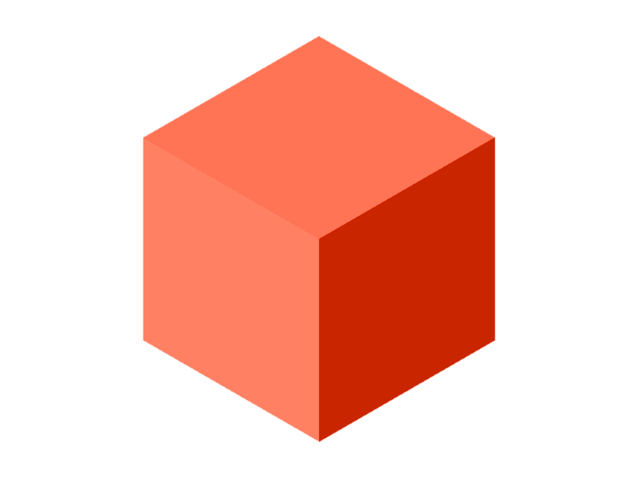

Loading ...
Converse Posts Empty
- {{date | date:'medium'}}
-

{{ post.user_name }}
{{ post.updated_at | date:'medium' }}Title : {{ post.contents}}
Questions ( {{ post.questions?.length }} ) {{ image.options }} - No Of Supports : {{ image.supports?.length }}
- No Of Opinions: {{ image.opinions?.length }}
-
{{ opinion.opinions }}